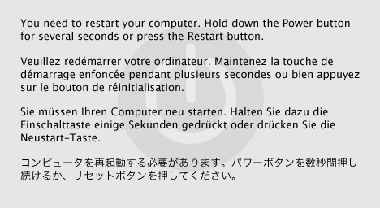

|
Q: Can you provide a roadmap for developing software to work with USB devices under Mac OS X?A: The following is a roadmap for the development of USB Device Driver and User Client software and is presented as a Question and Answer session. Q: Which USB Host Controller Interfaces does Mac OS support?A: Mac OS X supports Open Host Controller Interface (OHCI) and Enhanced Host Controller Interface (EHCI) devices. With the release of Mac OS X 10.4.x, there is built-in support for Universal Host Controller Interface (UHCI) USB Controllers. For example, on Power PC Based Macintosh systems, one could install a PCI UHCI USB Controller card, or a CardBus UHCI USB Controller card, as applicable, and find that Mac OS X 10.4.x will support USB devices attached to the card. For the Intel based Macintosh systems, the UHCI USB Controller is built-in along with the EHCI USB Controller interface. Q: What Development Tools should I use and Where can I get them?A: The typical development platform is a Power Macintosh system with at least 256M RAM, with Mac OS X 10.3.x or greater, installed. For development, use Xcode. The latest version of Xcode provides support for writing USB Device Drivers, for both Application and in-kernel levels, which are compatible to Mac OS X 10.1.x. Note: You can develop a USB Device Driver on a Power Macintosh system with Mac OS X 10.2.x or earlier installed, however, there are complexities with using the Project Builder application and your target system is an earlier release of Mac OS X. Xcode (which only runs under Mac OS X 10.3.x and greater) provides cross-development runtime libraries for compatibility with earlier releases of Mac OS X. To use the cross-development runtime libraries, you may have to install them from the Tools SDK, if you did not install them originally (the cross-development runtime-libraries are not installed as part of the "Easy Install"). IMPORTANT: If you have Mac OS X 10.2.x or earlier, you are urged to upgrade to the latest version of Mac OS X and use the latest version of Xcode for your development work on USB Device Driver software. Two other important USB tools are USB Prober and the logging versions of the IOUSBFamily kext. USB Prober displays USB specific information from the system and from IORegistry. It also displays status messages generated by the USBLog function call. The logging version of the IOUSBFamily kext complements USB Prober as it is a version of the USB Driver designed to provide status information which the shipping release does not. The logging version of IOUSBFamily, provides detailed information as to USB device attachment, driver matching and probe score results, and requests made to USB devices. USB Prober is installed as part of the Developer SDK installation. If the Developer SDK has been installed, then locate USB Prober at /Developer/Applications/Utilities/USB Prober. The Logging Version of the IOUSBFamily Kext is available from Apple Developer Connection (ADC). IMPORTANT: You must the version of the IOUSBFamily kext which is appropriate for the version of Mac OS which you are testing with. Using a mismatched version of the logging version of the IOUSBFamily kext can result in a kernel panic at system start. Note: A USB Analyzer is also recommended for the development of a USB Device Driver. A USB analyzer is not a required tool, however, it will save time and energy in diagnosing problems with the driver. The analyzer shows the USB transactions taking place on the bus. A USB packet trace will help you to understand error returns, why no data is being returned, why unexpected results are returned, as well as why other problems are happening. The following are a list of USB Analyzer Vendors which have been referenced by developers on the USB Mail List. Note:The list below is for your information only, and is not an endorsement of the products by these vendors. The logging version of the IOUSBFamily Kernel Extension does not provide packet data information that is available under Windows. Even under Windows, a USB Analyzer is required to analyze problems resulting from STALL, DATA TOGGLE, and other protocol error conditions. Q: Which USB Device Driver type should I implement: Application level USB Driver or In-Kernel level USB Driver?A: The answer to this question can be determined by perusing Getting Started with Device Drivers. Software development is far easier in Application space. You can use the built in Xcode source level debugger with an Application-level driver. For in-Kernel drivers, you will need to use the GDB debugger to debug your in-kernel device driver. Your development efforts are much more complex when you are Coding in the Kernel. If at all possible, do not program in the kernel. Whether you program at the Application level or in the kernel, you will use IOKit in programming a USB device driver. Understanding IOKit will help you to implement your USB Device driver. Q: What are the common criteria for writing Application-level USB Software and where can I access sample code?A: The following are some criteria and examples of cases where you will want to implement an Application-level USB driver/application. Links are provided to direct you to more information.
To write an application level driver, you need to be familiar with device detection and opening the device interface. Information is provided on Working with USB Device Interfaces. Sample code for detecting a USB device/interface from application space can be found in Developer Examples folder which is installed as part of the standard Developer Tools Installation package. The location is /Developer/Examples/IOKit/usb/. Q: When should I write a Kernel-level USB Device Driver?A: You will implement a Kernel-level driver, when Apple provides no class driver which matches to your device and the device will be used by a kernel process - for example USB networking, serial, and mass storage device drivers must be implemented as Kernel Extensions. HID Device Drivers may be in-kernel, when the device services will be available to all applications, but should be implemented as an application level driver if the device is to be used by specific applications. As with application level USB drivers, you need to understand IOKit programming. Note: For building Universal Binary Kernel Extensions, refer to Tech Note 2163 Building Universal I/O Kit Drivers for information on configuring an Xcode project to produce a universal driver. Q: What programming samples exist for Kernel-level USB drivers?A: There are three programming examples, as well as the source code for the Apple Kernel-level driver for USB devices. The programming examples are not complete drivers and are designed to demonstrate specific driver programming techniques. The following are a list of examples to refer to
The following is a list of Apple USB Class drivers, for which source code is available from the Darwin web site. To access these source code files, you must have an Apple Developer Connection (ADC) Member ID, as well as agree to the Apple Public Source License Agreement.
The Apple USB Class Drivers are based on the Device Class Specifications which are available from the USB-IF Device Class Documents web page. Q: Who can I contact for more assistance?A: The USB Mailing list is the best starting point for getting additional assistance. You must subscribe to the list to submit a question. Members of the USB Engineering team are members of the list, and they along with numerous developers on the list may respond to your question. If you have an introductory type question, peruse the USB Mail archives as the question may have been previously asked and answered. If you find a bug with Mac OS X USB Class drivers, or with the use or implementation of the Apple supplied API's, submit a Bug Report, so that you can track the matter. Use a Bug Report to submit enhancement requests to Mac OS X and to the Apple supplied API's. For additional help, when there is no satisfactory response from the USB Mail List, you can submit a Technical Support Incident request. Q: Can I license Apple Software or its logo?A: If you will need to license Apple software, contact Apple Software Licensing for a listing of licensable software and for the procedure to obtain the license. The Mac logo is also licensable from Apple Software Licensing. Q: Can I have Apple help with compatibility testing of my device and software?A: If you would like Apple to provide a quick look compatibility test of your product with the Apple Products that include USB support built-in, send 5 of your products to: Craig Keithley I/O Technology Evangelist Apple 1 Infinite Loop, MS-303-2TE Cupertino, CA 95014 Common Questions and AnswersThe following are some common questions which developers new to developing USB Device Drivers for Mac OS X encounter and are frequently asked on the USB Mail List. To understand the rules of device matching, refer to Technical Q&A QA1076 Tips on USB driver matching for Mac OS X. Q: How can I determine what the non-zero results from USB calls mean?A: The common error codes returned by USB functions are defined in the IOReturn.h and USB.h header files. Error results of the form 0xE0000XXX are general IOKit errors. Error results of the form 0xE00040XX are USB specific errors. The complete path to the IOReturn.h header file is /System/Library/Frameworks/IOKit.Framework/Headers/IOReturn.h. The complete path to the USB.h header file is /System/Library/Frameworks/IOKit.Framework/Headers/usb/USB.h. You want to display the error result in hexadecimal to match against the error definitions listed in IOReturn.h or USB.h. For example, the Listing 1: Excerpt from IOReturn.h
...
#ifndef sys_iokit
#define sys_iokit err_system(0x38)
#endif /* sys_iokit */
#define sub_iokit_common err_sub(0)
#define sub_iokit_usb err_sub(1)
...
#define iokit_common_err(return) (sys_iokit|sub_iokit_common|return)
#define iokit_family_err(sub,return) (sys_iokit|sub|return)
#define kIOReturnSuccess KERN_SUCCESS // OK
..
#define kIOReturnNoResources iokit_common_err(0x2be) // resource shortage
#define kIOReturnIPCError iokit_common_err(0x2bf) // error during IPC
#define kIOReturnNoDevice iokit_common_err(0x2c0) // no such device
#define kIOReturnNotPrivileged iokit_common_err(0x2c1) // privilege violation
#define kIOReturnBadArgument iokit_common_err(0x2c2) // invalid argument
#define kIOReturnLockedRead iokit_common_err(0x2c3) // device read locked
#define kIOReturnLockedWrite iokit_common_err(0x2c4) // device write locked
#define kIOReturnExclusiveAccess iokit_common_err(0x2c5) // exclusive access and
// device already open
To better understand the error declarations, refer to Technical Q&A QA1075 Making Sense of I/O Kit Error Codes for an explanation of I/O Kit error codes. Q: When I load my in-kernel KEXT Device Driver, a window as shown in Figure 1, is displayed stating that the machine must be restarted. Where can I get more information on how to figure out what is happening and what to do for this situation?A:  When you see this window, a kernel panic has occurred. Refer to Tech Note 2063 Understanding and Debugging Kernel Panics for information on how to proceed. Q: How can I send custom SCSI commands to my USB Mass Storage Class Device?A: This question is addressed in Technical Q&A QA1179 Sending SCSI Commands to Storage Devices. Document Revision History
Posted: 2006-02-28 |
|